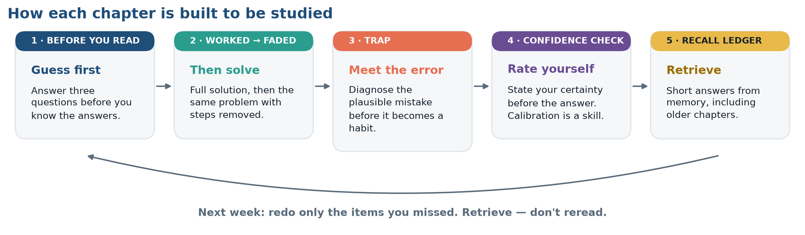

Macro Finance
A Living Textbook on International Finance
Preface
This edition was built on 13 November 2026.
International finance is the study of what happens to money when it crosses a border. This book is for senior undergraduates who already know corporate finance and want to know what changes when a firm sells in euros, borrows in dollars, builds a plant in Mexico or competes with a rival in Japan.
It is a living textbook. The numbers in it are not typed into the text: every statistic, chart and table is pulled from the agency that publishes it — the BIS, the IMF, the World Bank, the Federal Reserve — each time the book is built. Each chart shows its source and the date it was retrieved, so you always know which vintage you are reading. If you see a different number from a classmate, check the dates: you may both be right.
Three things are at the front of the book because they apply to every chapter: how to study from it (below), the Top Ten things to know in international finance, and a contents page showing which chapters are live.
How to Use This Book
Most textbooks are written to be read. This one is written to be worked. The difference matters, because four decades of research on how people actually learn technical material converges on an uncomfortable finding: the study methods that feel most productive — rereading, highlighting, following a worked solution with your eyes — are among the least effective, while the methods that feel difficult and slow are the ones that produce durable knowledge. Students consistently underestimate this, preferring rereading to self-testing even after the evidence is explained to them.
So the recurring features of this book are not decoration. Each one is a specific instructional device chosen because it has empirical support, and each is labeled so you know what it is asking of you.
| Feature | What you do | Why it is there |
|---|---|---|
| Before You Read | Answer three questions before you know the answers | Pretesting. Attempting an answer and failing primes attention and builds a scaffold for the material; it beats post-reading review for later retention, and it reduces mind-wandering. |
| Worked Application | Follow a complete solution, then a faded version with steps removed, then solve one unaided | Worked-example fading. Full guidance first prevents overload; removing it gradually builds independence. |
| Trap | Read a plausible-looking error and diagnose it | Misconception confrontation. Errors you have personally committed are remembered; errors you were merely warned about are not. |
| Recall Ledger | Short-answer questions at the chapter’s end: three from this chapter, two from chapters you finished weeks ago, and two on the chapter’s AI section | Retrieval practice, spaced and interleaved. Short-answer recall beats multiple choice because you must generate the answer rather than recognize it; the older questions force the spacing that makes knowledge stick. |
| Explain It | Write two lines justifying each step of a solution in your own words | Self-explanation. Generating a rationale exposes the gaps that a confident read conceals. |
| Confidence Check | Rate how sure you are before you see the answer, then compare | Calibration. Fluency is a liar: material you have just reread feels known. Tracking the gap between confidence and performance is the single fastest way to fix a study plan. |
| Live Data Lab | Pull current data yourself and defend a conclusion | Transfer. The skill being assessed is not recall but judgment under genuine uncertainty, which is the actual job. |
| Then and Now | Compare the current figure with the value this same book reported at an earlier build | Only a living textbook can do this. It makes the volatility of the subject visible rather than asserted. |
A study protocol: about forty minutes per chapter
- Five minutes. Answer Before You Read without looking anything up. Expect to be wrong.
- Twenty minutes. Read the chapter once. Do not highlight. At the end of each section, close the book and write one sentence stating what it claimed.
- Ten minutes. Do the Worked Applications, including the faded one, writing a rationale for each step.
- Five minutes. Do the Recall Ledger from memory, then check. Record the two you missed.
- Next week. Redo only those two. That is the whole system.
A warning about the alternative. You can pass an examination in this subject by memorizing formulas — covered interest parity, the Garman–Kohlhagen equation, the translation rules. You cannot do the job that way, because the job consists almost entirely of situations in which it is unclear which formula applies. The features above are designed to build the discrimination skill — knowing which tool the situation calls for — rather than the execution skill, which a spreadsheet does better than you anyway.